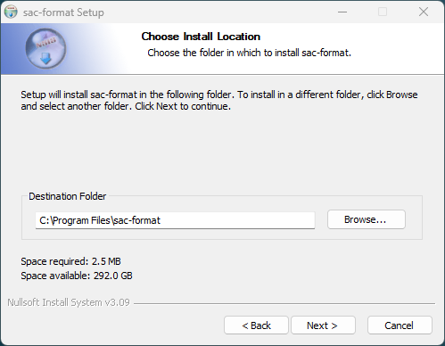

sac-format
C++20 SAC-file Library
V0.4.0
User Manual
Table of Contents


1. Introduction
sac-format is a single-header statically linked library designed to make working with binary SAC-files as easy as possible. Written in C++20, it follows a modern and easy to read programming-style while providing the high performance brought by C++.
sac-format’s developed on GitHub!
Download sac-format from the GitHub release page.
Download an offline version of the documentation (PDF).
Get help from the community forum.
1.1. Why sac-format
sac-format is Free and Open Source Software (FOSS) released under the MIT license. Anyone can use it, for any purpose (including proprietary software), anywhere in the world. sac-format is operating system agnostic and confirmed working on Windows, macOS, and Linux systems.
1.1.1. Safe
sac-format is safe—it conforms to a strict set of C++ programming guidelines,
chosen to ensure safe code-execution. The guideline conformance list is in
cpp-linter.yml and can be cross-referenced against this master list. Results
of conformance checking are here.
Testing is an important part of software development; the sac-format library is
extensively tested using the Catch2 testing framework. Everything from low-level
binary conversions to high-level Trace reading/writing are tested and confirmed
working. Check and run the tests yourself. See the Testing section for more
information.
1.1.2. Fast
sac-format is fast—it’s written in C++, carefully optimized, and extensively benchmarked. You can run the benchmarks yourself to find out how sac-format performs on your system. See the Benchmarking section for more information.
1.1.3. Easy
sac-format is easy—single-header makes integration in any project simple. Installation is easy with our automatic installers. Building is a breeze with CMake, even on different platforms. Object-oriented design makes use easy and intuitive. See the Quickstart section to get up and running.
1.1.4. Small
sac-format is small—in total (header + implementation–excluding comments) the library is under 2100∗ lines of code. Small size opens the door to using on any sort of hardware (old or new) and makes it easy to expand upon.
∗ This value includes only the library, excluding all testing/benchmarking
and example codes. Including utests.cpp, benchmark.cpp, util.hpp, the example
program (list_sac), and sac-format totals just over 5100 lines of code.
1.1.5. Documented
sac-format is extensively documented—both online and in the code. Nothing’s hidden—nothing’s obscured. Curious how something works? Check the documentation and in-code comments.
1.1.6. Transparent
sac-format is transparent—all analysis and coverage information is publicly available online.
1.1.7. Trace Class
sac-format includes the Trace class for seismic traces, providing high-level
object-oriented abstraction to seismic data. With the Trace class, you don’t
need to worry about manually reading SAC-files word-by-word. It’s compatible
with v6 and v7 SAC-files and can automatically detect the version upon reading.
File output defaults to v7 SAC-files and there is a legacy_write function for v6
output.
1.1.8. Low-Level I/O
If you want to roll your own SAC-file processing workflow you can use the
low-level I/O functionality built into sac-format. All functions tested and
confirmed working—they’re used to build the Trace class!
2. Quickstart
2.1. Installation
The easiest way to use sac-format is to install it via the automatic installers.
Installers for the latest release are located here. Be sure to check the sha512
checksum of the installer against its correspondingly named .sha515 file to
ensure the file is safe (for example: sac-format.pkg corresponds to
sac-format.pkg.sha512).
2.1.1. Windows
sac-format provides a graphical installer on Windows (sac-format.exe).
Always check the sha512 checksum value of the installer (sac-format.exe; more
info here) against sac-format.exe.sha512.
By default, Microsoft Defender will block the installer with a pop-up like that one below:
To continue the install, click on the ’More Info’ link and then the ’Run anyway’ button as seen in the following image:
Then the installer will open and present you with the welcome screen:
By default, sac-format installs in C:/Program Files/sac-format as seen in the screen below:

Because all programs in sac-format are command-line based feel free to disable Start Menu shortcuts:
Upon successful install of sac-format you will see this window:
2.1.2. macOS
sac-format provides both command line and graphical installers on macOS.
- Graphical
The graphical installer is
sac-format.pkgand will walk you through the installation process. NOTE: the default installation location is/opt/sac-format.By default, macOS will block the installer. To install, right-click on
sac-format.pkgand select open. A warning will pop up that looks like:Simply click ’Open’ and the installer will begin from the first screen:
Upon successfull installation you will see:
- Command line
Command line installation is performed either using the self-extrating archive or by manually extracting the gzipped tar archive.
- Self-Extracting Archive
# Check the sha512 checksum sha512sum -c sac-format-<version>-Darwin-<arch>.sh.sha512 # Run self-extracting archive bash sac-format-<version>-Darwin-<arch>.sh
Be sure to replace
<version>and<arch>with the correct versions and architectures, respectively (for example:sac-format-0.4.0-Darwin-x86_64.sh). - Gzipped Tar Archive
# Check the sha512 checksum sha512sum -c sac-format-<version>-Darwin-<arch>.tar.gz.sha512 # Extract Gzipped tar archive tar -xzf sac-format-<version>-Darwin-<arch>.tar.gz
- Self-Extracting Archive
2.1.3. Linux
sac-format provides four different command line installation methods on Linux.
Debian based distributions (for example: Debian, Ubuntu, Linux Mint) can use the Debian Archive.
RedHat based distributions (for example: RedHat, Fedora, CentOS) can use the RPM Archive.
All distributions can use the Self-Extracting Archive.
All distributions can use the Gzipped Tar Archive.
- Debian Archive
# Check the sha512 checksum sha512sum -c sac-format.deb.sha512 # Install using apt sudo apt install ./sac-format.deb
- RPM Archive
# Check the sha512 checksum sha512sum -c sac-format.rpm.sha512 # Install using rpm sudo rpm -i sac-format.rpm
- Self-Extrating Archive
# Check the sha512 checksum sha512sum -c sac-format-<version>-Linux-<arch>.sh.sha512 # Run self-extrating archive bash sac-format-<version>-Linux-<arch>.sh
- Gzipped Tar Archive
# Check the sha512 checksum sha512sum -c sac-format-<version>-Linux-<arch>.tar.gz.sha512 # Extract gzipped tar archive tar -xzf sac-format-<version>-Linux-<arch>.tar.gz
2.2. Build Instructions
Building is as easy as cloning the repository, running CMake for your preferred build tool, and then building.
2.2.1. GCC
git clone https://github.com/arbCoding/sac-format.git cmake --preset gcc-release cmake --build ./build/release/gcc
2.2.2. Clang
git clone https://github.com/arbCoding/sac-format.git cmake --preset clang-release cmake --build ./build/release/clang
2.3. Use
To use link to the compiled library (libsac-format.a on Linux/macOS,
sac-format.lib on Windows) and include sac_format.hpp.
2.4. Example Programs
2.5. CMake Integration
To integrate sac-format into your CMake project, add it to your CMakeLists.txt.
include(FetchContent)
set(FETCHCONTENT_UPDATES_DISCONNECTED TRUE)
FetchContent_Declare(sac-format
GIT_REPOSITORY https://github.com/arbCoding/sac-format
GIT_TAG vX.X.X)
FetchContent_MakeAvailable(sac-format)
include_directory(${sacformat_SOURCE_DIR/src})
project (your_project
LANGUAGES CXX)
add_executable(your_executable
your_sources
sac_format.hpp)
target_link_libraries_library(your_executable
PRIVATE sac-format)
2.6. Example
2.6.1. Reading and Writing
#include <filesystem>
#include <iostream>
#include <sac_format.hpp>
using namespace sacfmt;
namespace fs = std::filesystem;
int main() {
Trace trace1{};
// Change header variable
trace1.kstnm("Station1");
fs::path file{"./test.SAC"};
// Write
trace1.write(file);
// Read
Trace trace2 = Trace(file);
// Confirm equality
std::cout << (trace1 == trace2) << '\n';
fs::remove(file);
return EXIT_SUCCESS;
}
3. Documentation
3.1. Trace class
The Trace class provides easy access to SAC-files in C++. Each SAC-file is a
Trace; therefore, each Trace object is a seismic trace (seismogram).
3.1.1. Reading SAC
SAC-files can be read in by using the parameterized constructor with a
std::filesystem::path (<filesystem>) or a std::string (<string>)
variable that corresponds to the location of the SAC-file.
For example:
#include <filesystem>
#include <sac_foramt.hpp>
int main() {
std::filesystem::path my_file{"/home/user/data/ANMO.SAC"};
sacfmt::Trace anmo = sacfmt::Trace(my_file);
return EXIT_SUCCESS;
}
3.1.2. Writing SAC
Writing SAC files can be done using one of two write functions.
3.1.3. Getters and Setters
Every SAC variable is accessed via getters and setters of the same name.
- Example Getters
trace.npts()trace.data1()trace.kstnm()
- Example Setters
trace.kevnm("Event 1")trace.evla(32.89)trace.mag(3.21)
- Setter rules
Most of the setters are only constrained by the parameter type (single-precision, double-precision, boolean, etc.). Some setters are constrained by additional rules.
- Required for sanity
Rules here are required because the sac-format library assumes them (not strictly required by the SAC format standard). For instance, the geometric functions assume certain bounds on latitudes and longitudes. sac-format automatically imposes these rules.
stla(input)
Limited to \([-90, 90]\) degrees, input that is outside that range is reduced using circular symmetry.
stlo(input)
Limited to \([-180, 180]\) degrees, input that is outside that range is reduced using circular symmetry.
evla(input)
Limited to \([-90, 90]\) degrees, input that is outside that range is reduced using circular symmetry.
evlo(input)
Limited to \([-180, 180]\) degrees, input that is outside that range is reduced using circular symmetry.
- Required for safety
Rules here are required by the SAC format standard. sac-format automatically imposes these rules to prevent the creation of corrupt sac-files.
npts(input)
Because
nptsdefines the size of the data vectors, changing this value will change the size ofdata1anddata2∗. Increasing npts resizes the vectors (std::vector::resize) by placing zeros at the end of the vectors. Reducing npts resizes the vectors down to the first npts values.Therefore, care must be taken to maintain separate copies of
data1anddata2∗ if you plan to manipulate the original data after resizing.∗ data2 has
nptsonly if it is legal, otherwise it is of size 0.leven(input)
Changing the value of
levenpotentially changes the legality ofdata2, it also potentially affects the value ofiftype.If iftype\(>1\), then leven must be
true(evenly sampled data). Therefore, if leven is madefalsein this scenario (unevenly sampled data) then iftype becomes unset∗.If changing leven makes data2 legal∗∗, then data2 is resized to have
nptszeros.∗ The SAC format defines the unset values for all data-types. For integers (like iftype) it is the integer value
-12345.∗∗ If data2 was already legal, then it is unaffected.
iftype(input)
Changing the value of
iftypepoentially changes the legality ofdata2, it also potentially affects the value ofleven.If leven is
false, then iftype must be either 1 or unset. Therefore, changing iftype to have a value \(>1\) requires that leven becomestrue(evenly sampled data).If changing iftype makes data2 legal∗, then data2 is resized to have
nptszeros.∗ If data2 was already legal, then it is unaffected.
data1(input)
If the size of
data1is changed, thennptsmust change to reflect the new size. Ifdata2is legal, this adjusts its size to match as well.data2(input)
If the size of
data2is changed to be larger than 0 and it is illegal, it is made legal by settingiftype(2)(spectral-data).When the size of data2 changes,
nptsis updated to the new size anddata1is resized to match.If
data2is made illegal, its size is reduced to 0 whilenptsanddata1are unaffected.
- Required for sanity
3.1.4. Internal Structure
The SAC-trace stores the data internally in a series of pre-allocated
std::array (<array>) container objects. Getters and setters access these via
a lookup table. The internal components are below:
3.1.5. Convenience Methods
calc_geometry
Calculate gcarc, dist, az, and baz assuming spherical Earth.
trace.stla(45.3); trace.stlo(34.5); trace.evla(18.5); trace.evlo(-34); trace.calc_geometry(); std::cout << "GcArc: " << trace.gcarc() << '\n'; std::cout << "Dist: " << trace.dist() << '\n'; std::cout << "Azimuth: " << trace.az() << '\n'; std::cout << "BAzimuth: " << trace.baz() << '\n';
frequency
Calculate frequency from delta.
double frequency{trace.frequency()};
date
Return std::string formatted as YYYY-JJJ from nzyear and nzjday.
std::string date{trace.date()};
time
Return std::string formatted as HH:MM:SS.xxx from nzhour, nzmin, nzsec, and
nzmsec.
std::string time{trace.time()};
3.1.6. Exceptions
sac-format throws exceptions of type sacfmt::io_error (inherits
std::exception) in the event of a failure to read/write a SAC-file.
3.2. Convenience Functions
degrees_to_radians
Convert decimal degrees to radians.
double radians{sacfmt::degrees_to_radians(degrees)};
radians_to_degrees
Convert radians to decimal degrees.
double degrees{sacfmt::radians_to_degrees(radians)};
gcarc
Calculate great-circle arc distance (spherical planet).
double gcarc{sacfmt::gcarc(latitude1, longitude1, latitude2, longitude2)};
azimuth
Calculate azimuth between two points (spherical planet).
double azimuth{sacfmt::azimuth(latitude2, longitude2, latitude1, longitude1)};
double back_azimuth{sacfmt::azimuth(latitude1, longitude1, latitude2, longitude2)};
limit_360
Take arbitrary value of degrees and unwrap to \([0, 360]\).
double degrees_limited{sacfmt::limit_360(degrees)};
limit_180
Take arbitrary value of degrees and unwrap to \([-180, 180]\). Useful for longitude.
double degrees_limited{sacfmt::limit_180(degrees)};
limit_90
Take arbitrary value of degrees and unwrap to \([-90, 90]\). Useful for latitude.
double degrees_limited{sacfmt::limit_90(degrees)};
3.3. Low-Level I/O
Low-level I/O functions are discussed below.
- Binary conversion
int_to_binaryandbinary_to_int
Conversion pair for binary representation of integer values.
const int input{10}; // sacfmt::word_one is alias for std::bitset<32> (one word) sacfmt::word_one binary{sacfmt::int_to_binary(input)}; const int output{sacfmt::binary_to_int(binary)}; std::cout << (input == output) << '\n';float_to_binaryandbinary_to_float
Conversion pair for binary representation of floating-point values.
const float input{5F}; sacfmt::word_one binary{sacfmt::float_to_binary(input)}; const float output{sacfmt::binary_to_float(binary)}; std::cout << (input == output) << '\n';double_to_binaryandbinary_to_double
Conversion pair for binary representation of double-precision values.
const double input{1e5}; // sacfmt::word_two is alias for std::bitset<64> (two words) sacfmt::word_two binary{sacfmt::double_to_binary(input)}; const double output{sacfmt::binary_to_double(binary)}; std::cout << (input == output) << '\n';string_to_binaryandbinary_to_string
Conversion pair for binary representation of two-word (regular) string values.
const std::string input{"NmlStrng"}; sacfmt::word_two binary{sacfmt::string_to_binary(input)}; const std::string output{sacfmt::binary_to_string(binary)}; std::cout << (input == output) << '\n';long_string_to_binaryandbinary_to_long_string
Conversion pair for binary representation of four-word (only
kstnm) string values.const std::string input{"The Long String"}; // sacfmt::word_four is alias for std::bitset<128> (four words) sacfmt::word_four binary{sacfmt::long_string_to_binary(input)}; const std::string output{sacfmt::binary_to_long_string(binary)}; std::cout << (input == output) << '\n';
- Reading/Writing
NOTE that care must be taken when using them to ensure that safe input is provided; the
Traceclass ensures safe I/O, low-level I/O functions do not necessarily ensure safety.read_word,read_two_words,read_four_words, andread_data
Functions to read one-, two-, and four-word variables (depending on the header) and an arbitrary amount of binary data (exclusive to
data1anddata2).convert_to_word,convert_to_words, andbool_to_word
Takes objects and converts them into
std::vector<char>(convert_to_wordandbool_to_word) orstd::array<char, N>(convert_to_words, N = # of words).write_words
Writes input words (as
std::vector<char>) to a binary SAC-file.
- Utility
concat_words
Concatenates words taking into account the system endianness.
bits_stringandstring_bits
Template function that performs conversion of binary strings of arbitrary length to an arbitrary number of words.
remove_leading_spacesandremove_trailing_spaces
Remove leading and trailing blank spaces from strings assuming ASCII convention (space character is integer 32, below that value are control characters that also appear as blank spaces).
string_cleaning
Ensures string does not contain an internal termination character (
\0) and removes it if present, then removes blank spaces.prep_string
Performs
string_cleaningfollowed by string truncation/padding to the necessary length.equal_within_tolerance
Floating-point/double-precision equality within a provided tolerance (default is
f_eps, defined insac_format.hpp).
3.4. Testing
utests.cpp contains the unit- and integration-tests, using Catch2. Test coverage
details are visible on CodeCov.io and Codacy.com. All tests can be locally-run
to ensure full functionality and compliance.
3.4.1. Errors only
By default utests prints out a pass summary, without details unless an error is
encountered.
3.4.2. Full output
By passing the --success flag (utests --success) you can see the full results of
all tests.
3.4.3. Compact output
The full output is verbose, using the compact reporter will condense the test
results (utests --reporter=compact --success).
3.4.4. Additional options
To see additional options, run utests -?.
3.4.5. Using ctest
If you have CMake install, you can run the tests using ctest.
3.5. Benchmarking
benchmark.cpp contains the benchmarks. Running it locally will provide
information on how long each function takes; benchmarks start with the low-level
I/O function and build up to Trace reading, writing, and equality comparison.
To view available optional flags, run becnhmark -?.
3.6. Source File List
3.6.1. Core
The two core files are split in the standard interface (hpp)/implementation (cpp) format.
3.6.2. Testing and Benchmarking
3.7. Dependencies
3.7.1. Automatic (CMake)
- Xoshiro-cpp v1.12.0 (testing and benchmarking)
- Catch2 v3.4.0 (testing and benchmarking)
3.8. SAC-file format
The official and up-to-date documentation for the SAC-file format is available from the EarthScope Consortium (formerly IRIS/UNAVCO) here. The following subsections constitute my notes on the format. Below is a quick guide—all credit for the creation of, and documentation for, the SAC file-format belongs to its developers and maintainers (details here).
3.8.1. Floating-point (39)
32-bit (1 word, 4 bytes)
depmin
Minimum value of the dependent variable (displacement/velocity/acceleration/volts/counts).
depmen
Mean value of the dependent variable.
depmax
Maximum value of the dependent variable.
odelta
Modified (observational) value of
delta.resp(0--9)
Instrument response parameters (poles, zeros, and a constant).
Not used by SAC—they’re free for other purposes.
stel
Station elevation in meters above sea level (m.a.s.l).
Not used by SAC—free for other purposes.
stdp
Station depth in meters below surface (borehole/buried vault).
Not used by SAC—free for other purposes.
evel
Event elevation m.a.s.l.
Not used by SAC—free for other purposes.
evdp
Event depth in kilometers (previously meters) below surface.
mag
Event magnitude.
user(0--9)
Storage for user-defined values.
dist
Station–Event distance in kilometers.
az
Azimuth \(\mathrm{\left(Event \to Station\right)}\), decimal degrees from North.
baz
Back-azimuth \(\mathrm{\left(Station \to Event\right)}\), decimal degrees from North.
gcarc
Station–Event great circle arc-length, decimal degrees.
cmpaz
Instrument measurement azimuth, decimal degrees from North.
Value Direction 0° North 90° East 180° South 270° West Other 1/2/3 cmpinc
Instrument measurement incident angle, decimal degrees from upward vertical (incident 0° = dip -90°).
Value Direction 0° Up 90° Horizontal 180° Down 270° Horizontal NOTE: SEED/MINISEED use dip angle, decimal degrees down from horizontal (dip 0° = incident 90°).
xminimum
Spectral-only equivalent of
depmin(\(f_{0}\) or \(\omega_{0}\)).xmaximum
Spectral-only equivalent of
depmax(\(f_{max}\) or \(\omega_{max}\)).yminimum
Spectral-only equivalent of
b.ymaximum
Spectral-only equivalent of
e.
3.8.2. Double (22)
64-bit (2 words, 8 bytes)
NOTE: in the header section these are floats—they’re doubles in the footer
section of v7 SAC-files. In memory they’re stored as doubles regardless of the
SAC-file version.
delta
Increment between evenly spaced samples (\(\Delta t\) for timeseries, \(\Delta f\) or \(\Delta\omega\) for spectra).
b
First value (begin) of independent variable (\(t_{0}\)).
e
Final value (end) of independent variable (\(t_{max}\)).
o
Event origin time, in seconds relative to the reference time.
a
Event first arrival time, in seconds relative to the reference time.
t(0--9)
User defined time values, in seconds relative to the reference time.
f
Event end (fini) time, in seconds relative to the reference time.
stla
Station latitude in decimal degrees, N/S–positive/negative.
sac-format automatically enforces \(\mathrm{stla}\in[-90, 90]\).
stlo
Station longitude in decimal degrees, E/W–positive/negative.
sac-format automatically enforces \(\mathrm{stlo}\in[-180, 180]\).
evla
Event latitude in decimal degrees, N/S–positive/negative.
sac-format automatically enforces \(\mathrm{evla}\in[-90, 90]\).
evlo
Event longitude in decimal degrees, E/W–positive/negative.
sac-format automatically enforces \(\mathrm{evlo}\in[-180, 180]\).
sb
Original (saved)
bvalue.sdelta
Original (saved)
deltavalue.
3.8.3. Integer (26)
32-bit (1 word, 4 bytes)
nzyear
Reference time GMT year.
nzjday
Reference time GMT day-of-year (often called Julian Date) (1–366).
nzhour
Reference time GMT hour (00–23).
nzmin
Reference time GMT minute (0–59).
nzsec
Reference time GMT second (0–59).
nzmsec
Reference time GMT Millisecond (0–999).
nvhdr
SAC-file version.
Version Description v7Footer (2020+, sac 102.0+) v6No footer (pre-2020, sac 101.6a-) norid
Origin ID.
nevid
Event ID.
npts
Number of points in data.
nsnpts
Original (saved)
npts.nwfid
Waveform ID.
nxsize
Spectral-only equivalent of
npts(length of spectrum).nysize
Spectral-only, width of spectrum.
iftype
File type.
Value Type Description 01 ITIME Time-series 02 IRLIM Spectral (real/imaginary) 03 IAMPH Spectral (amplitude/phase) 04 IXY General XY file ?? IXYZ∗ General XYZ file ∗Value not listed in the standard.
idep
Dependent variable type.
Value Type Description 05 IUNKN Unknown 06 IDISP Displacement (nm) 07 IVEL Velocity \(\mathrm{\left(\frac{nm}{s}\right)}\) 08 IACC Acceleration \(\mathrm{\left(\frac{nm}{s^{2}}\right)}\) 50 IVOLTS Velocity (volts) iztype
Reference time equivalent.
Value Type Description 05 IUNKN Unknown 09 IB Recording start time 10 IDAY Midnight reference GMT day 11 IO Event origin time 12 IA First arrival time 13–22 IT(0–9) User defined time (t) pick iinst
Recording instrument type.
Not used by SAC—free for other purposes.
istreg
Station geographic region.
Not used by SAC—free for other purposes.
ievreg
Event geographic region.
Not used by SAC—free for other purposes.
ievtyp
Event type.
Value Type Description 05 IUNKN Unknown 11 IO Other source of known origin 37 INUCL Nuclear 38 IPREN Nuclear pre-shot 39 IPOSTN Nuclear post-shot 40 IQUAKE Earthquake 41 IPREQ Foreshock 42 IPOSTQ Aftershock 43 ICHEM Chemical explosion 44 IOTHER Other 72 IQB Quarry/mine blast—confirmed by quarry/mine 73 IQB1 Quarry/mine blast—designed shot info-ripple fired 74 IQB2 Quarry/mine blast—observed shot info-ripple fired 75 IQBX Quarry/mine blast—single shot 76 IQMT Quarry/mining induced events—tremor and rockbursts 77 IEQ Earthquake 78 IEQ1 Earthquake in a swarm or in an aftershock sequence 79 IEQ2 Felt earthquake 80 IME Marine explosion 81 IEX Other explosion 82 INU Nuclear explosion 83 INC Nuclear cavity collapse 85 IL Local event of unknown origin 86 IR Region event of unknown origin 87 IT Teleseismic event of unknown origin 88 IU Undetermined/conflicting information iqual
Quality of data.
Value Type Description 44 IOTHER Other 45 IGOOD Good 46 IGLCH Glitches 47 IDROP Dropouts 48 ILOWSN Low signal-to-noise ratio Not used by SAC—free for other purposes.
isynth
Synthetic data flag.
Value Type Description 49 IRLDATA Real data XX ∗ Synthetic ∗Values and types not listed in the standard.
imagtyp
Magnitude type.
Value Type Description 52 IMB Body-wave magnitude (\(M_{b}\)) 53 IMS Surface-wave magnitude (\(M_{s}\)) 54 IML Local magnitude (\(M_{l}\)) 55 IMW Moment magnitude (\(M_{w}\)) 56 IMD Duration magnitude (\(M_{d}\)) 57 IMX User-defined magnitude (\(M_{x}\)) imagsrc
Source of magnitude information.
Value Type Description 58 INEIC National Earthquake Information Center 61 IPDE Preliminary Determination of Epicenter 62 IISC Internation Seismological Centre 63 IREB Reviewed Event Bulletin 64 IUSGS U.S. Geological Survey 65 IBRK UC Berkeley 66 ICALTECH California Institute of Technology 67 ILLNL Lawrence Livermore National Laboratory 68 IEVLOC Event location (computer program) 69 IJSOP Joint Seismic Observation Program 70 IUSER The user 71 IUNKNOWN Unknown ibody
Body/spheroid definition used to calculate distances.
Value Type Name Semi-major axis (a [m]) Inverse Flattening (f) -12345 UNDEF Earth (Historic) 6378160.0 0.00335293 98 ISUN Sun 696000000.0 8.189e-6 99 IMERCURY Mercury 2439700.0 0.0 100 IVENUS Venus 6051800.0 0.0 101 IEARTH Earth (WGS84) 6378137.0 0.0033528106647474805 102 IMOON Moon 1737400.0 0.0 103 IMARS Mars 3396190.0 0.005886007555525457
3.8.4. Boolean (4)
32-bit (1 word, 4 bytes) in-file/8-bit (1 byte) in-memory
leven
REQUIRED
Evenly-spaced data flag.
If true, then data is evenly spaced.
lpspol
Station polarity flag.
If true, then station has positive-polarity—it follows the left-hand convention (for example, North-East-Up [NEZ]).
lovrok
File overwrite flag.
If true, then it’s okay to overwrite the file.
lcalda
3.8.5. String (23)
32/64-bit (2/4 words, 8/16 bytes, 8/16 characters)
kstnm
Station name.
kevnm∗
Event name.
∗This is the only four word (16 character) string.
khole
Nuclear—hole identifier.
Other—Location identifier (LOCID).
ko
Text for
o.ka
Text for
a.kt(0--9)
Text for
t(0--9).kf
Text for
f.kuser(0--2)
Text for the first three of
user(0--9).kdatrd
Date the data was read onto a computer.
kinst
Text for
iinst.
3.8.6. Data (2)
32-bit (2 words, 8 bytes) in-file/64-bit (4 words, 16 bytes) in-memory
Stored as floating-point (32-bit) values in SAC-files; stored as double-precision in memory.